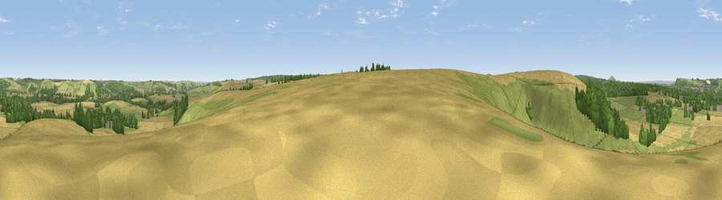

Viewpoint near Sutton Veny
#23248 in England · top 37% of its area beats it · near Sutton VenyWhere it is
The exact computed spot (ST 89675 40775). Click the marker for map links.
The view, rendered

A 360° render of this exact spot computed from the terrain model, tree cover and land cover — summer colours, afternoon light, calibrated against photographs of famous viewpoints. Real trees, hedges and buildings will differ in detail.
The panorama
Grey silhouette: terrain skyline in each direction (720 bearings, Earth curvature and refraction included). Dashed green: skyline with trees (+15 m) and buildings (+8 m) as obstacles. Blue strip: how far the ground is visible on each bearing.
Where the view opens
Wedge length = distance to the farthest visible ground on that bearing (vegetation-aware). Rings at 10, 25 and 50 km.
What fills the view
43% cropland · 42% grassland · 14% woodland · 1% built-up
Angular shares of the visible panorama (visual magnitude), not map area. Landscape diversity 0.46 (0–1 Shannon).
Key numbers
More beautiful places nearby
The staircase of upgrades: each row has a higher view potential than everything closer. Driving times are estimates from straight-line distance, calibrated against real road routing — check an actual route before setting out.
| Place | Direction | Drive | Score |
|---|---|---|---|
| Viewpoint near Longbridge Deverill | W · 1 km | ~3 min | 55.9 |
| Viewpoint near Norton Bavant | NNE · 4 km | ~9 min | 58.0 |
| Viewpoint near Monkton Deverill | WSW · 6 km | ~12 min | 70.9 |
| Cley Hill | NW · 7 km | ~15 min | 76.8 |
| Viewpoint near Berwick St John | S · 20 km | ~34 min | 78.2 |
| Beacon Batch | WNW · 44 km | ~64 min | 79.4 |
| Bleadon Hill [Loxton Hill] | WNW · 55 km | ~77 min | 79.6 |
| Eggardon Hill | SW · 58 km | ~80 min | 80.3 |
51.16612, -2.14905 · source: screening · position refined by local search. Computed location — check access rights before visiting.